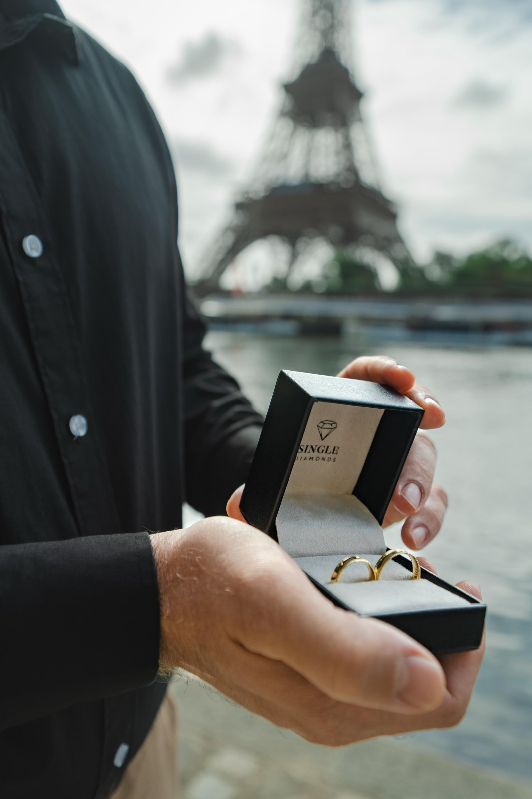

QUEM SOMOS
A história da Single Diamonds começa há gerações, com José Pinheiro, meu avô, que dedicou sua vida ao universo dos diamantes. Com olhar preciso e mãos experientes, ele foi referência na identificação e valorização de pedras naturais — deixando um legado de conhecimento e respeito por tudo o que é autêntico.
Inspirado por essa herança, e com o incentivo do meu pai, Joel Pinheiro, iniciamos juntos uma nova etapa: a criação da nossa própria mineração, com foco em diamantes naturais e coloridos extraídos em nossa região.
Assim nasceu a Single Diamonds, uma marca de luxo que une tradição familiar, excelência técnica e curadoria rigorosa. Cada joia que criamos carrega não apenas beleza, mas também história, origem e propósito.
CONHEÇA NOSSAS CRIAÇÕES

Como fazemos?
Compreendemos os desejos, estilo de vida e preferências do cliente, traduzindo isso em informações objetivas para o projeto.
Por que isso importa? Um bom briefing é a base para um design assertivo. Na joalheria de alto padrão, captar emoções e intenções do cliente é tão importante quanto entender o que ele quer visualmente.
Ao criar peças únicas e elegantes, equilibrando inovação estética com viabilidade técnica e atratividade de mercado, o design criado precisa ser encantador, mas também exequível e alinhado com o posicionamento da marca e o valor percebido pelo cliente.
Domínio técnico em ourivesaria, cravação e acabamento fino, garante qualidade, simetria e segurança da peça final.
A excelência no acabamento e na montagem das joias influencia diretamente a percepção de luxo e o valor da peça.


Single Diamonds
Aqui a sua história é celebrada em ouro e diamantes, é mais do que criar peças de alto luxo, nossa missão é eternizar momentos. Unimos o brilho eterno dos diamantes naturais à força simbólica do ouro puro para dar forma a jóias únicas — criadas sob medida para marcar momentos inesquecíveis.
Nascida em Patos de Minas com alma internacional, a Single Diamonds representa a fusão entre tradição joalheira e inovação em design. Cada criação é feita com rigor técnico, excelência nos acabamentos e uma curadoria de pedras preciosas que respeita os mais altos padrões de qualidade.
Somos especialistas em transformar conquistas em símbolos eternos. Para homens e mulheres que sabem o valor do que constroem e querem expressar isso com elegância, exclusividade e autenticidade.
CONHEÇA NOSSAS CRIAÇÕES